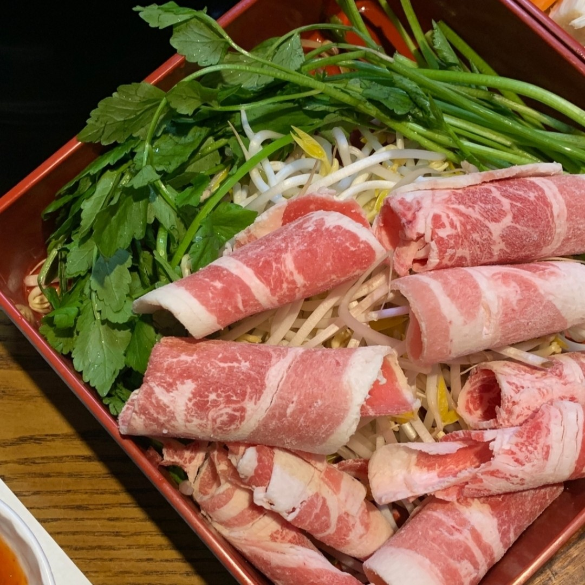
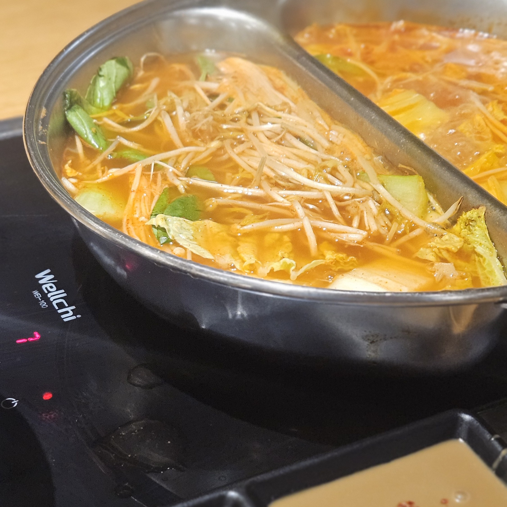
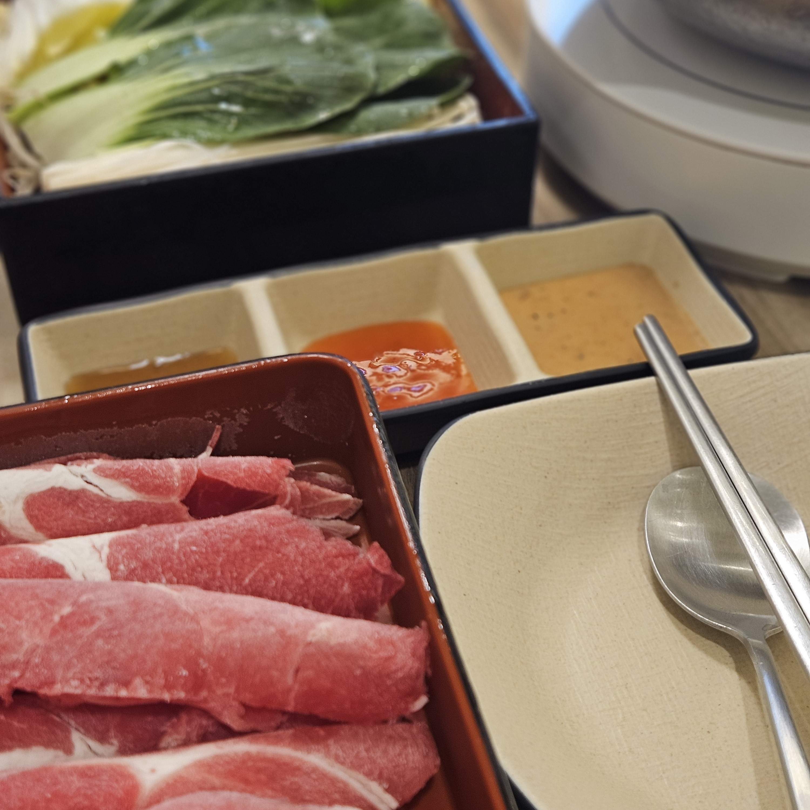
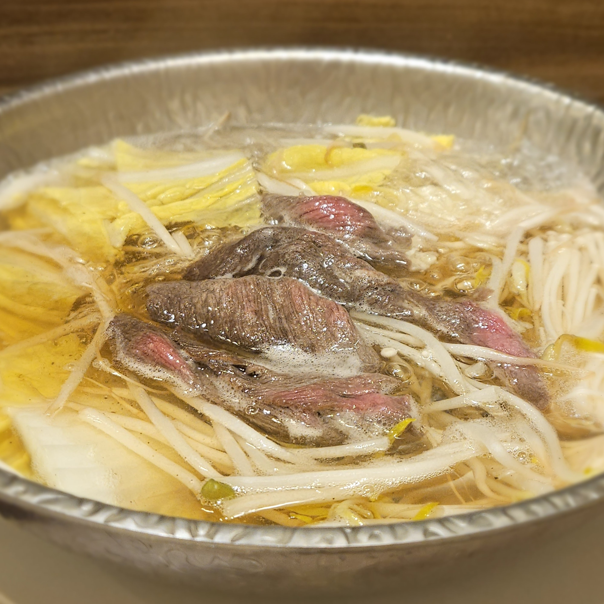
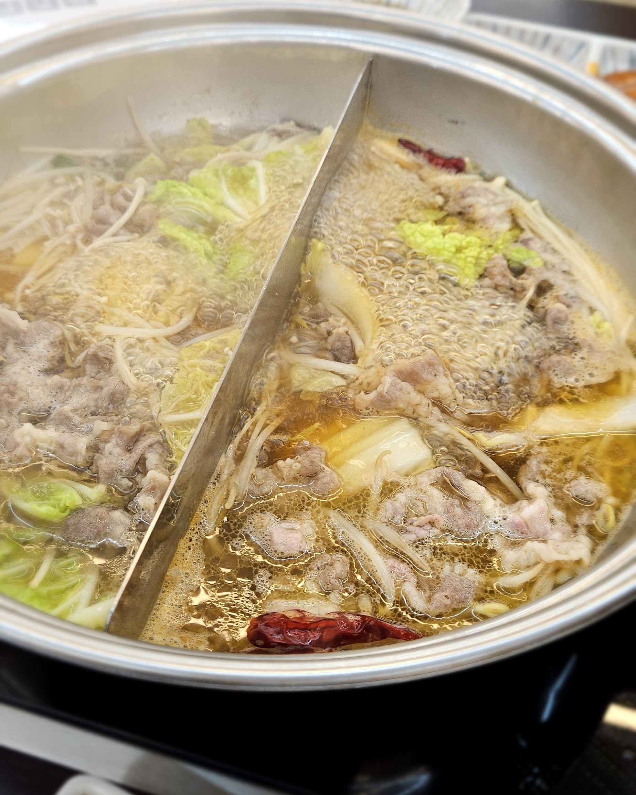
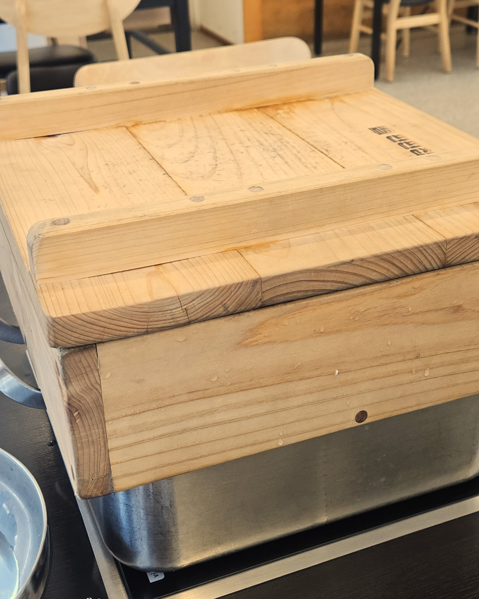

갓성비 무한리필 샤브샤브집
‘편편집’ 추천합니다!
‘편편집’ 추천합니다!
저의 최애음식은 샤브샤브인데요, 일주일에 두 번은 먹어야 할 만큼 정말 좋아하는 음식입니다.




샤브샤브 탐방기✨
여러 식당을 가봤지만 그 중에서도 ‘편편집’은 제가 애정하고 정말 좋아하는 샤브샤브집입니다.
무한리필인데도 맛있고 가성비도 정말 좋아서 소개하고 싶습니다!
저는 주로 학교에서 제일 가까운 안산중앙점을 가는데 가게도 넓고 깔끔해서 친구랑 가볍게 식사하기 좋아요.


샐러드바 구성도 잘 되어 있고, 고기 질도 생각보다 괜찮아서 정말 좋았습니다.
편백찜을 포함하여 샤브샤브 재료는 모두 무한리필이 가능하니 꼭 한 번쯤은 드셔보셨으면 좋겠습니다❤️🔥